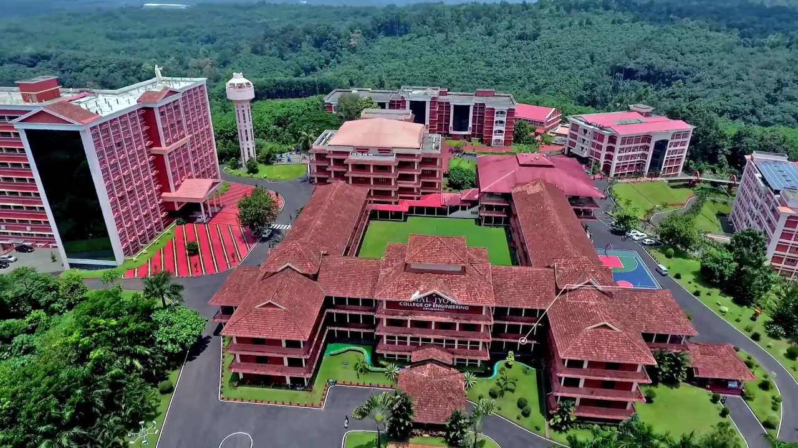

A Student Case Study Analysis
Amal Jyothi College of Engineering is one of the leading self-financing engineering colleges in Kerala, known for its academic excellence, strong placement record, and industry-oriented education. In today’s competitive education sector, colleges must build a strong brand image and deliver high-quality learning experiences.
This case study analyzes the Marketing Mix (4Ps) of Amal Jyothi College of Engineering — Product, Price, Place, and Promotion — from a student’s perspective. The objective is to understand how the college designs its academic offerings, fee structure, campus facilities, accessibility, and promotional strategies to meet the expectations of modern students and parents.
